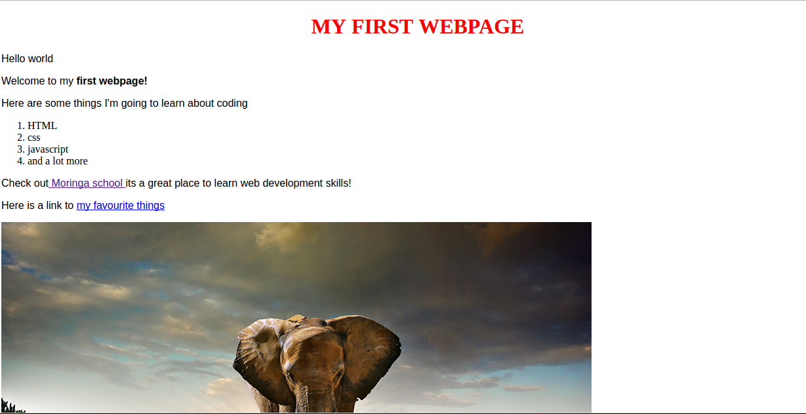

I am a focused and goal oriented person with an ability to finish a given task on time ,i am a great team player who believes in accomplishing tasks as a team. I am creative and innovative person who seeks to solve new and existing problems by coming up with new ways..i am a good communicator in both oral and written forms of communication. I am a confident person who deals with a challenge head on and believes that each new challenge is there to strengthen me both physically and emotionally
A world class travel agency website that gives a wide view of travel destinations, highly ranked as a top website in user frendliness
A world class website that gives a wide view of a private resorts, highly ranked as a top website in user frendliness
i decided to join programming class because i needed to understand which path i was going to follow in life i always wanted to offer tech solutions and may be begin my company in future; learning programming will be a major contributor towards me achieving them sooner or later.